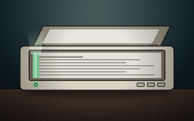

Make a PDF look like it was printed and scanned.
Drop PDFs anywhere on this page. They are processed right here in your browser and saved straight to your downloads — nothing is ever uploaded.
DROP PDFs ANYWHERE
or click to browse — multiple files welcome
Advanced settings
Randomness
Same seed, same scan.
Proofing
Drop a PDF first. You can then proof page 1 here without downloading anything.